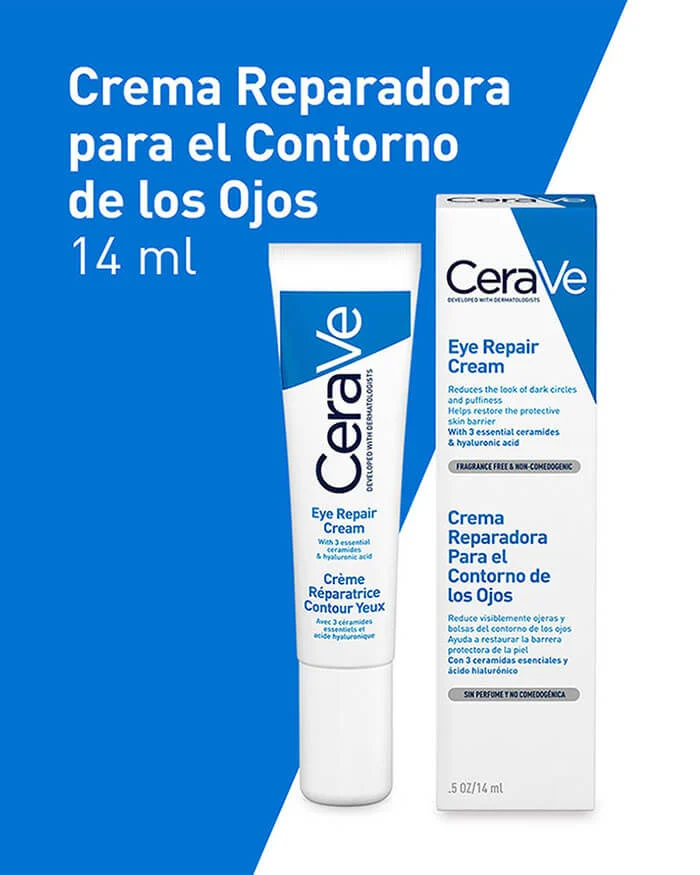
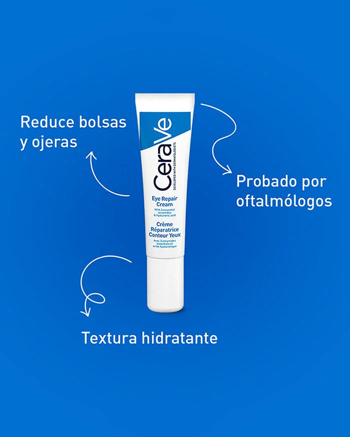
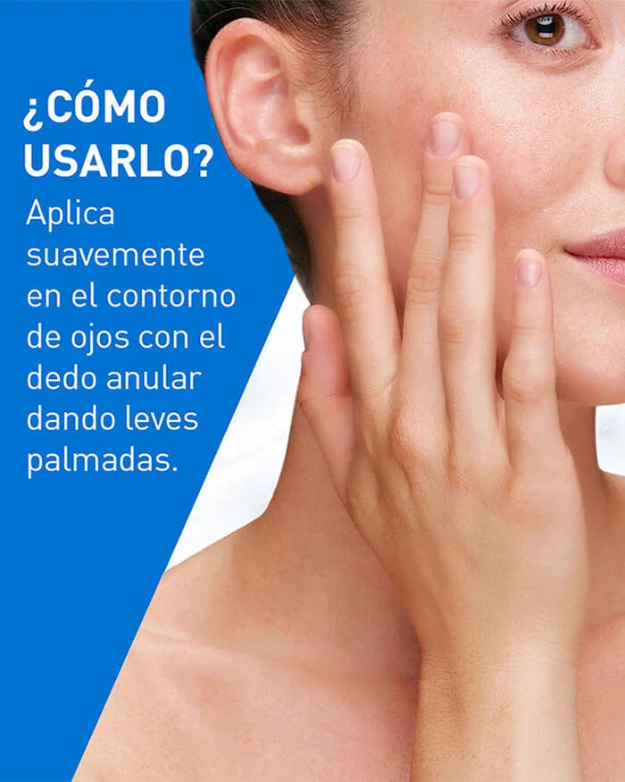

Crema reparadora para contorno de ojos
Con ácido hialurónico y ceramidas$17.000
Crema para contorno de ojos, ojeras e hinchazón
Cuando se trata de la piel del contorno de los ojos, la hinchazón y las ojeras son algunas de las preocupaciones más comunes.
Afortunadamente, una crema de contorno de ojos adecuada puede ayudar a suavizar e iluminar esta delicada piel para que luzca lo mejor posible. Busque una crema para el contorno de ojos formulada con ceramidas, ácido hialurónico y niacinamida para aportar hidratación y restaurar la barrera natural de la piel.
También es importante utilizar un producto cuya seguridad haya sido probada por oftalmólogos, como la Crema reparadora para contorno de ojos CeraVe, que es apta para su uso alrededor de los ojos.
La Crema reparadora para contorno de ojos CeraVe cuenta con un Complejo Marino y Botánico que ayuda a iluminar toda la zona de los ojos.
Adecuada para todo tipo de piel, nuestra crema para contorno de ojos no grasa, de rápida absorción y sin perfume, también contiene tres ceramidas esenciales, ácido hialurónico y niacinamida, además de la tecnología patentada MVE Delivery Technology que libera ingredientes de manera prolongada para una hidratación continua de la piel.
| Ingredientes | Aqua / Agua / Eau, Niacinamida, Alcohol Cetílico, Triglicérido Caprílico/Cáprico, Glicerina, Propanediol, Isononanoato de Isononilo, Ésteres de Jojoba, Sesquistearato de Metil Gluco |
| Contenido | 14 ml |
| Beneficios |
|
| Cómo ultilizarlo |
|